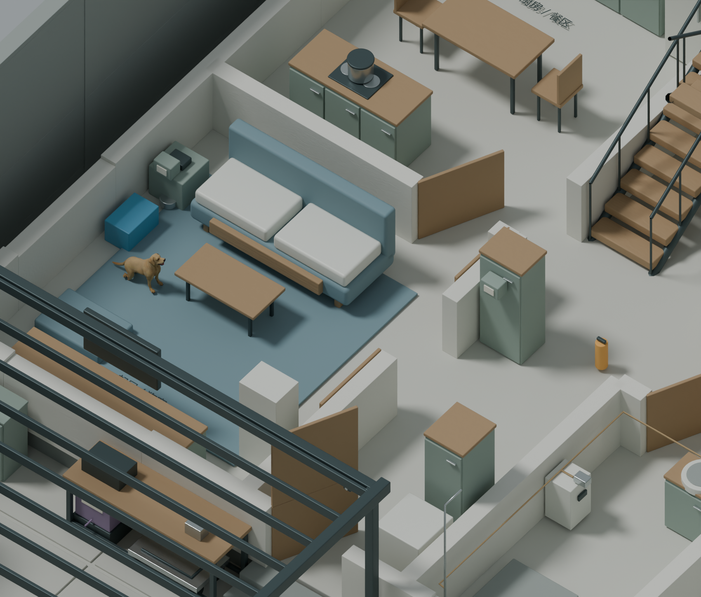

客厅入口与连续行走修正
2026年11月8日 · R3.7
原版客厅入口的20L水箱、三天物资箱与斜开的门扇共同堵住通路。上一版只检查站立点和部分路线，没有覆盖从院门连续进入房间的过程。

- 物资箱、急救箱和收音设备移到沙发西端靠墙；20L封装水移到西墙边。物资数量和储水量保持不变。
- 客厅通往门厅、厨房通往楼梯厅的门扇改为靠墙全开，清出两个入口。
- 客厅地毯计入可站立的地面，保留墙、家具和护栏碰撞；持续遇到阻挡时显示转向/后退提示。
- 重新测试完整按键路线：院门→客厅→厨房→返回院子；再从一层沿楼梯进入二层套房、走出屋顶门。测试只调整朝向，移动通过W键与正常动画循环完成，途中没有快速到达或修改人物位置。
打开修正后的第一视角 ↗ · 操作说明
原生模型与网页模型同步修改10个物体的摆放/旋转，网格数据未改；移动资产的四组多角度与线框检查无错误。保留的提示为箱体承托、标牌贴合和剖视门片之间的接触面，以及物品位于实际0.4m室内地坪的高度；这些接触与高度均符合当前装配方式。通行碰撞仍是简化体验模型。